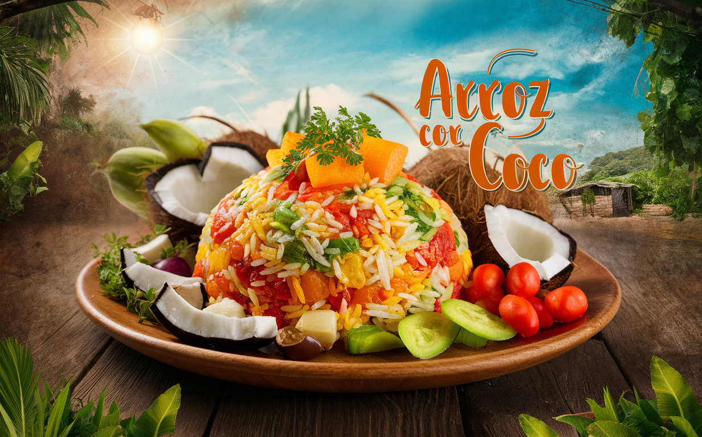
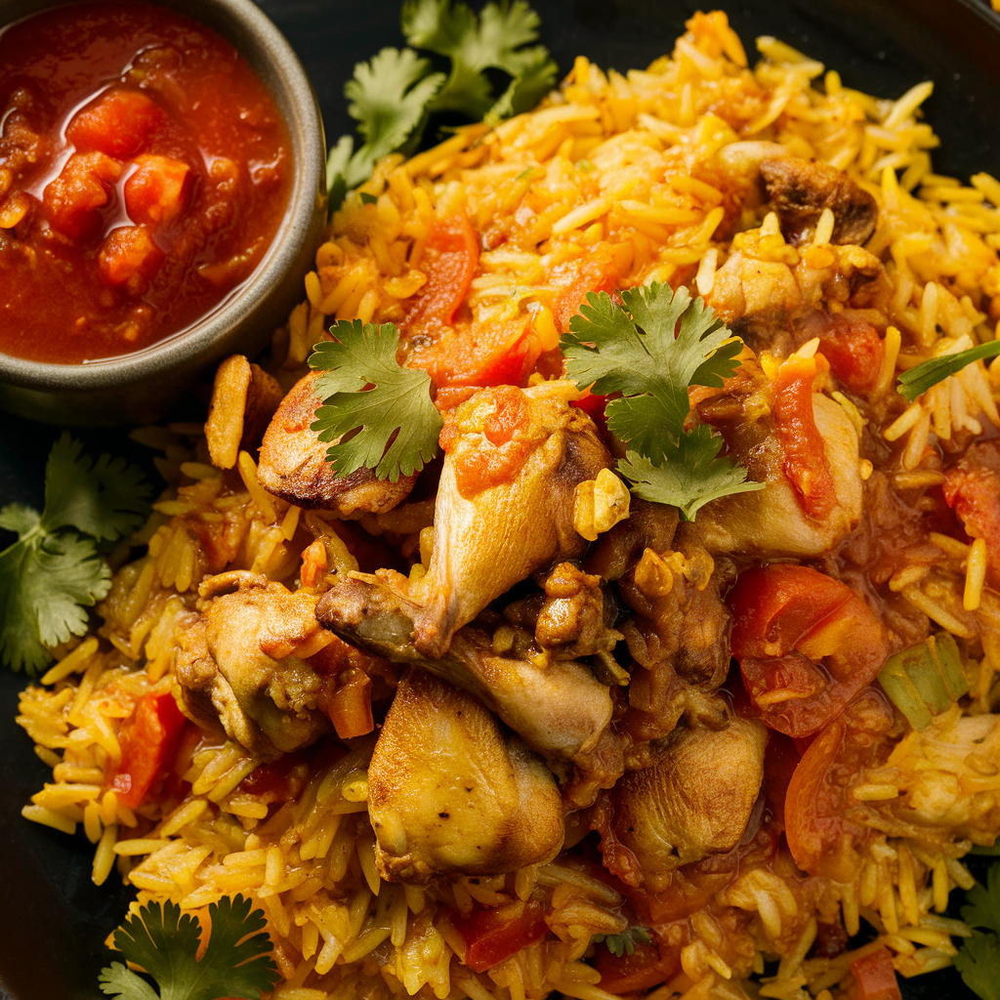

Arroz con coco
El arroz con coco o arroz de coco es una preparación de arroz blanco hervido en leche de coco y hojuelas de coco. Debido a que el arroz y el coco son cultivados comúnmente en las zonas entre trópicos, es común que preparen este platillo muchas culturas alrededor del mundo localizadas desde el Sureste Asiático hasta el Caribe.
tiempo de Preparacion
- total:30min
- preparacion:10 min
- coccion: 20 min
pasos
- Iniciamos preparando los ingredientes para tener todo a mano. Distribuimos la leche de coco de la siguiente manera: Apartamos 1 taza pura, con el resto de la leche sacamos 6 tazas de leche de coco (2 por cada taza de arroz) agregando el agua necesaria para completarlas
- Colocamos la taza de leche de coco pura a fuego medio junto con el azúcar y la sal en una olla profunda🥥 Movemos constantemente para que se empiece a hacer el titote (como una cocada) donde se empieza a separar el aceite del coco y como una masita que se va tornando marrón
- Cuando se termina de poner toda marrón inmediatamente volcamos el resto del agua de coco, dejamos calentar y agregamos el arroz, movemos hasta que se empiecen a hacer burbujas. Bajamos el fuego a mínimo y tapamos por 15 minutos. (cuando falten 5 minutos, agegas las uvas pasas) y listo! a disfrutar! Queda riquísimo
Ingredientes
- coco
- agua
- leche de coco
- arroz
- sal
- azucar
nutricion
| coco | 200g |
| Sal | 2 cucharaditas |
| arroz | 2 tazas |
| leche de coco | 4 tazas |
Mas Recetas

Arroz chino
Arroz chino
Arroz chino